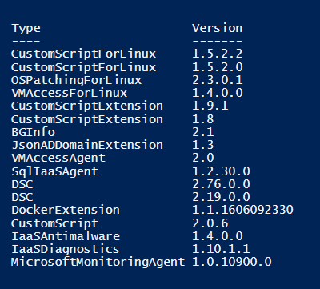

How to list VM extensions in Azure Stack using PowerShell
This document explains how to list VM extensions in Azure Stack with PowerShell.
Prerequisites
Ensure your Powershell environment is setup as detailed in Configure PowerShell Environment and Azure Stack Modules.
Instructions
From your Powershell window run:
Add-AzureRmEnvironment -Name "AzureStackUser" -ArmEndpoint "https://management.frn00006.azure.ukcloud.com"
Login-AzureRmAccount -EnvironmentName "AzureStackUser"
Get-AzureRmVmImagePublisher -Location frn00006 | `
Get-AzureRmVMExtensionImageType | `
Get-AzureRmVMExtensionImage | `
Format-Table -Property Type, Version -AutoSize
This will produce a table similar to the following:

Feedback
If you have any comments on this document or any other aspect of your UKCloud experience, send them to products@ukcloud.com.